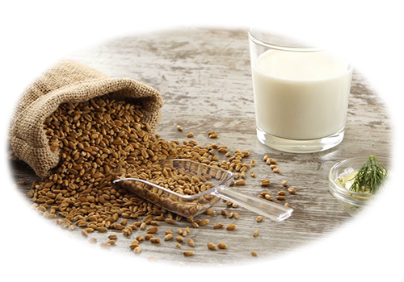
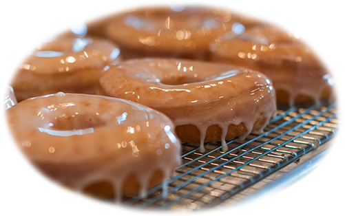
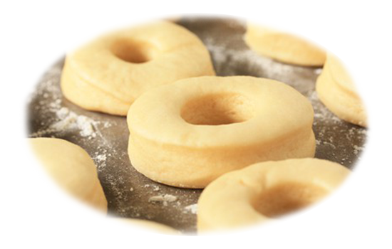

Our fresh ingredients
We use only the freshest ingredients from our most trusted farms and bakeries all over the country. In our doughnuts you will only find homemade additives that can be bought or crated in matter of days. It has a lot less health consequences than artificial additives.
In our products you can find carefully grown and manteined wheat for flour and butter glazing made from the best milk in the country. The secret ingredient makes the doughnuts special and cherished by our custumers.

The creation of the glaze
To glaze we warm the mixture until it’s less viscous. Dip our doughnut about three-quarters of the way in, then use a chopstick to pull it out of the glaze and transfer it to a cooling rack, dry side down. The glaze should run down enough to cover the last quarter of the doughnut. Finally we‘ll see the creamy texture of the glaze and the fantastic flavour. This process is tested and used by all of our shops and restaurants.

The dough making
While the doughnuts are proofing, we line a baking sheet with 2 layers of paper towels and place a wire rack on top of the towels. In a heavy-bottomed large pot or deep fryer, we heat at least 2 inches of oil until deep-fry thermometer registers 180°C. Working in batches, we use a slotted metal spoon or spatula to carefully place the doughnuts in the hot oil. Fry, flipping once, until light golden brown, 1 to 2 minutes per side. Finally we transfer done to the wire rack and return the oil to 180°C between batches.
